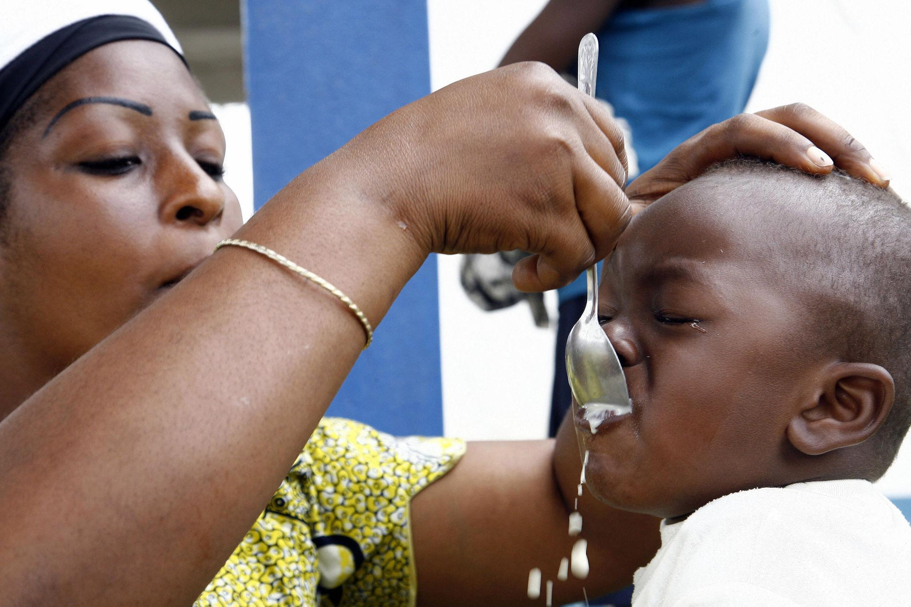

PREMIER
SECOURS

Une ingestion de substance toxique peut provoquer des symptômes graves rapidement.

La surdose accidentelle de médicaments nécessite une réaction immédiate.
L’inhalation de produits chimiques ou de fumée peut être dangereuse.